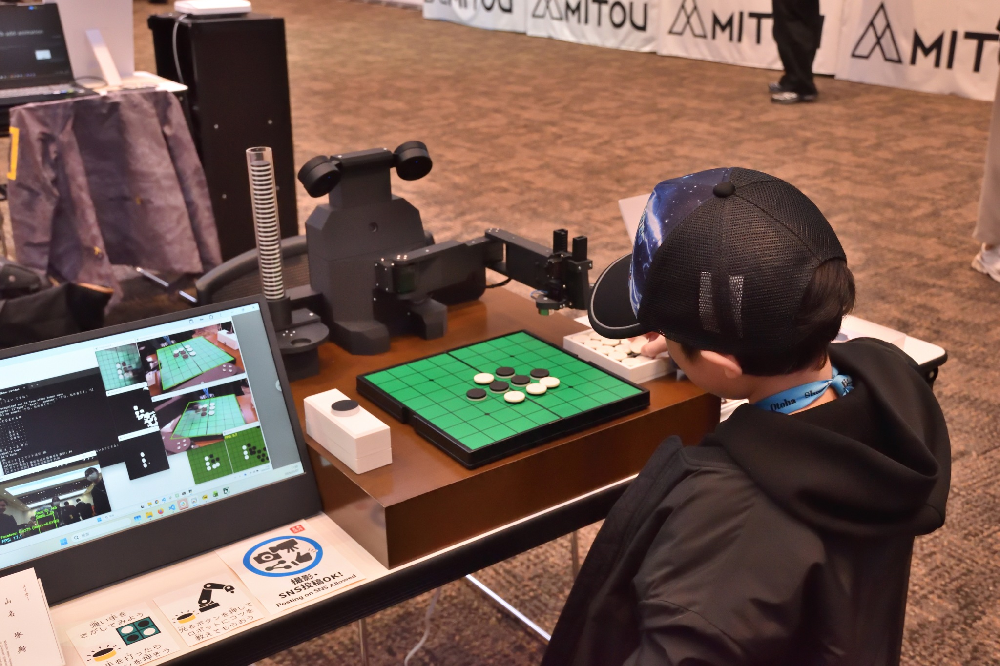

未踏会議2026
オセロ教授ロボット "Minoth" （ミノス） (2026)
世界チャンピオンにオセロAIが勝利してからもうすぐ30年。オセロAIは強さという面ではほぼ完璧になりました。しかし、AIができることはただ強い手を見つけることに留まっています。もし、強いAIがロボットの体を持って、オセロの勝ち方を教えてくれる未来があったら？そんな未来を体験していただきます。ロボットのアドバイスを参考に、オセロを打ってみませんか？



詳細
日時: 2026年3月7日（土）10:00～17:00
会場: 東京ミッドタウン・ホール（〒107-0052 東京都港区赤坂9-7-2）
入場料: 無料